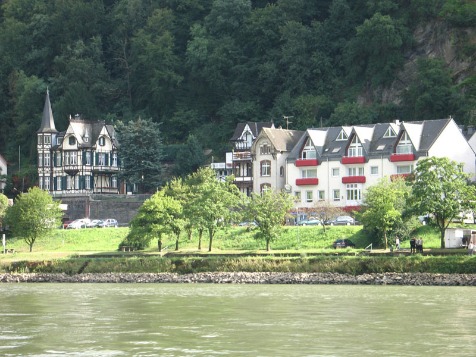

在Photoshop CS2中打开“岸边”和“效果图”图像，观察效果图，按照提示编辑图像，直至达到最终效果（为岸边的景色添加倒影效果），务必将结果以psd格式保存。
[提示]
（1）在“岸边”图像上将水面以上的图像选取，按Ctrl+Shift+J键，将图像剪切、复制为2个图层。新图层命名为“岸”，背景层改为普通层后命名为“水”，并将“水”层多余的白背景用魔棒工具选取后删除掉。
（2）将画布扩大为800×900像素，并调整“岸”层位于图像最上方。
（3）复制“岸”层，命名新图层为“倒影”，将“倒影”层垂直翻转，调整位置，使其上沿与“岸”层下沿对其，构成倒影效果。
（4）用裁切工具留取图像中间部分。（不要裁切到“水”层）
（5）调整“水”层大小及位置，使其与“倒影”层大小一致并重叠，选择“倒影”层，链接“水”层，使用自由变换命令将两个图层稍做纵向压缩。
（6）选择“倒影”层，执行“滤镜”→“模糊”→“动感模糊”，对话框中“角度”=90、“距离”=10。
（7）继续执行“滤镜”→“扭曲”→“波纹”，对话框中“数量”=45%、“大小”=中。
（8）将“倒影”层的不透明度改为80%，在图层调板中 “倒影”层和“水”层中间按住Alt键单击鼠标建立剪贴蒙版。
（9）再次使用裁切工具修整图像，裁掉多余部分。
（10）将图像以psd格式保存。
素材：
岸边
效果图